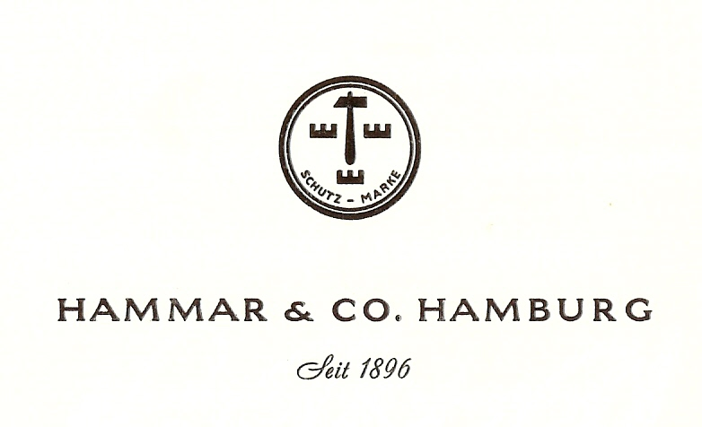

Släktvapnet
Släktvapen har gamla anor i Sverige och i synnerhet bland adelsfamiljer har de förekommit sedan tolvhundratalet. Men även bland borgerliga släkter antogs vapen från medeltiden och framåt, i vissa fall i form av enkla bokmärken, men också som symboler för någon yrkesverksamhet, t.ex.som firmamärken.
Hammar II:s vapen har följande beskrivning, s.k. blasonering: "En stolpvis ställd hammare, åtföljd av tre stiliserade murkronor nedanför och vid sidan av hammarskaftet".
Vapnet återfinns i 1969 års upplaga av Skandinavisk Vapenrulla, nr 8, under beteckningen SVR-126-68. Där beskrivs vapnet som svart, hammaren av guld och murkronorna av silver. Ursprungligen torde dock fältet ha varit blått och såväl hammare som murkronorna av guld. Den fullständiga blasoneringen återfinns i Svensk Släktkalender (2012).
Upphovsmannen till vapnet är O. Birger Hammar, (1872-1948), som var den mellersta av bröderna Hammar i Göteborg.
I släktarkivet finns ett korrespondenskort, som användes i firman Hammar & Co., som Birger grundade i Hamburg 1896 vid tjugofyra års ålder. I firmamärket är dock hammaren vänd till höger till skillnad från den vapenbild som nu används. Han antas ha ritat släktvapet vid förra sekelskiftet, vilket följaktligen skulle innebära, att det är över hundra år gammalt.

Hur Birger kom att fastna för hammaren och de tre murkronorna är inte svårt att förstå. Hammaren fanns f.ö. redan avbildad som firmamärke på lanternor i koppar och mässing samt nakterhus i mässing, som tillverkades på C.M. Hammars mekaniska verkstad i Göteborg i slutet på 1800-talet. De tre kronorna är ju kända symboler för Sverige, vilket på den tyska marknaden kan ha bidragit till att förstärka hans företags svenska profil.
Släktvapnet användes även av Birger i hans exlibris och på ett silversigill som än idag används av Tomas Hammar vid lackning av julklappar. Vapnet förekommer även på vapenringar, som bärs av en stor del av familjens herrar. För damerna finns en amulett med vapnet, som bärs i tunn kedja som halsband.
Vid släktmötet i Ramnäs 2001 togs beslut om ett släktmotto, nämligen: "Gör slag i saken!", som av uppenbara skäl ansågs passa väl ihop med vårt släktnamn. Tanken bakom detta motto är naturligtvis att uppmuntra till handlingskraft. På latin lyder vårt motto "Momentum fac".